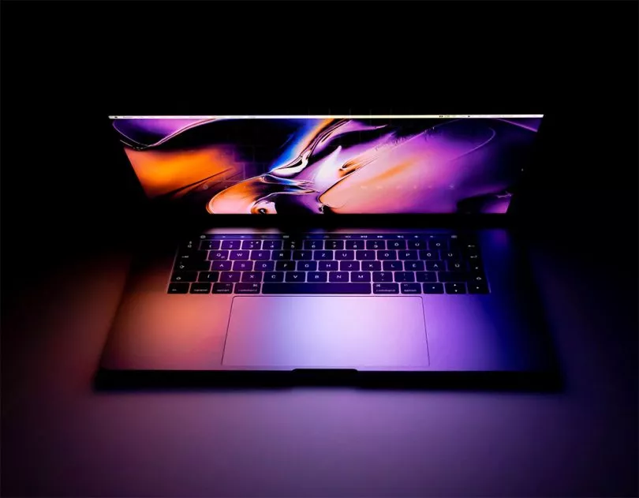

difinition d'un pc
Sigle signifiant « Personal Computer » ou « ordinateur personnel » en français. Ce terme désigne un ordinateur à usage individuel qui peut tenir sur un bureau et dont le coût permet d'envisager une utilisation par le grand public. D'où les termes souvent associés de « micro-ordinateur » ou « ordinateur de bureau » (en anglais « desktop computer »). En 1964, apparaît le Programma 101 de la société italienne Olivetti qui est considéré comme le premier ordinateur de bureau. Il ne possédait pas d'interface graphique mais il était le premier calculateur numérique programmable compact

| pc portables HP | pc portabless ASUS | pc portables toshiba |
| HP | ASUS | toshiba |
| HP | ASUS | toshiba |